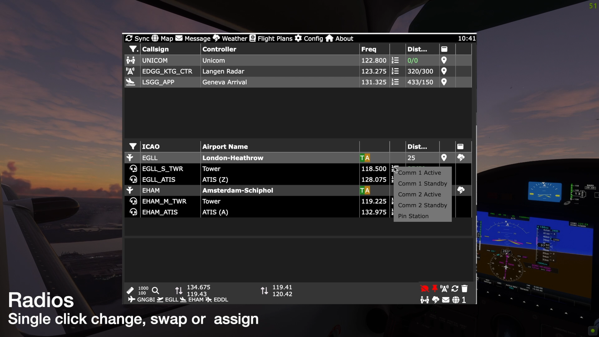
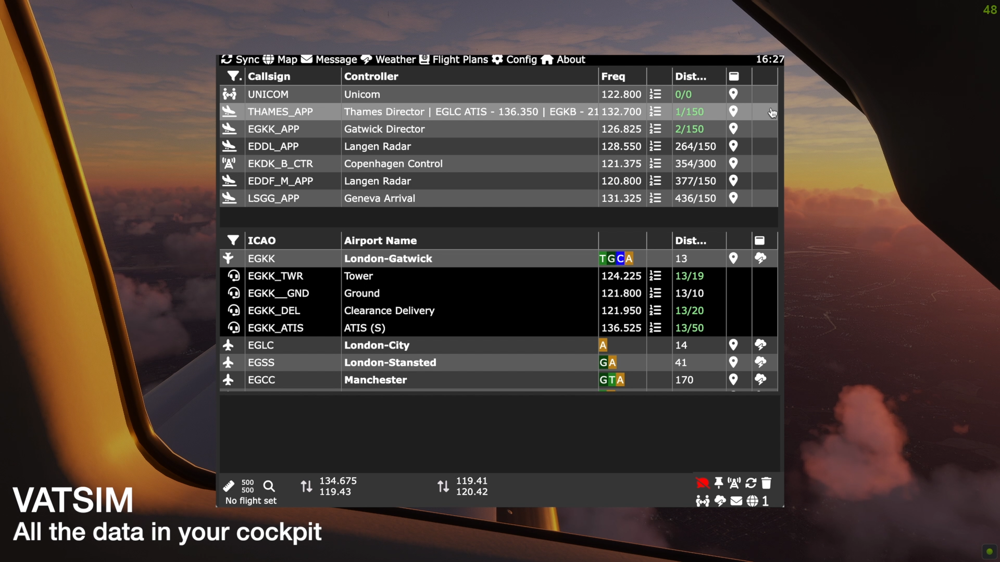
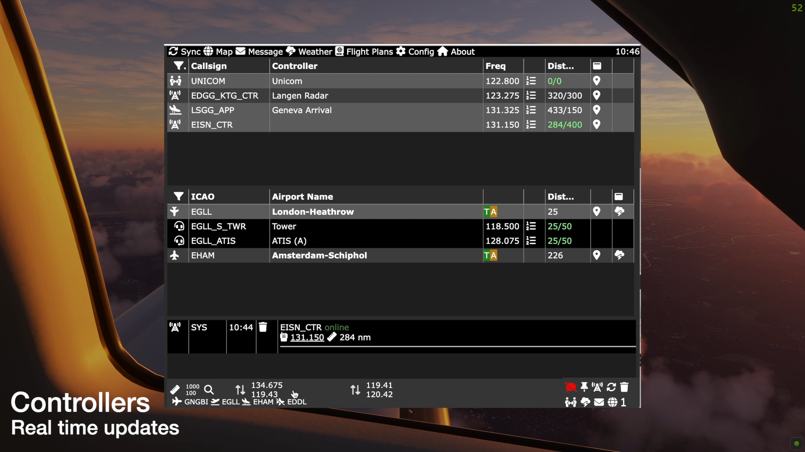
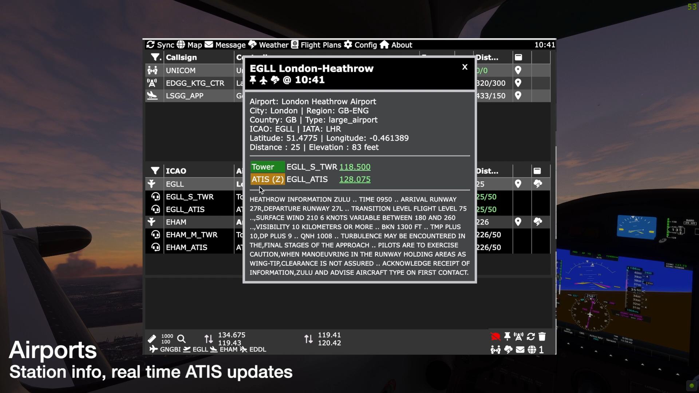
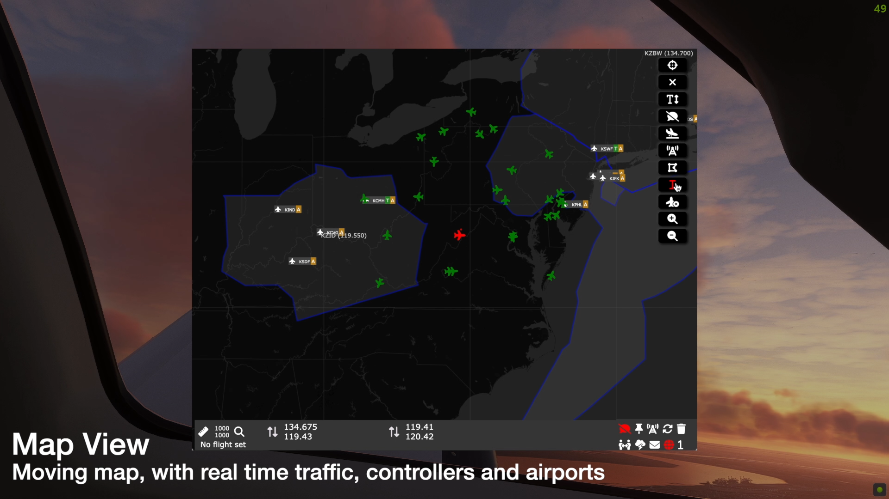
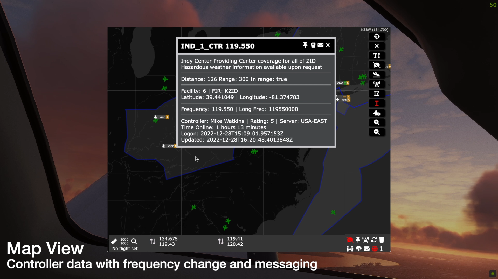
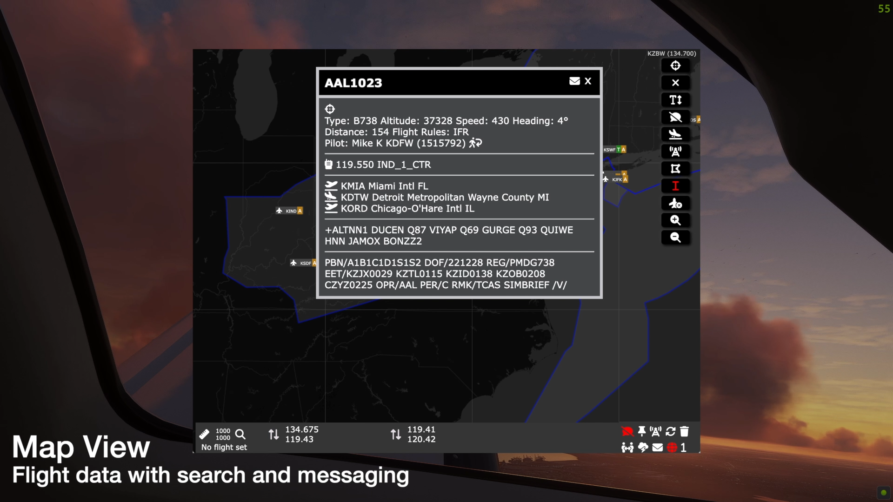
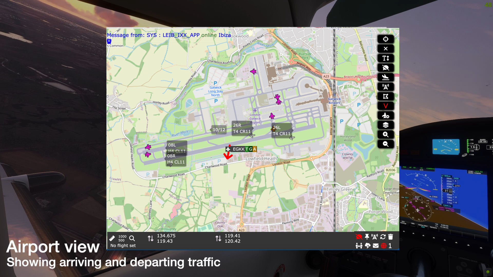
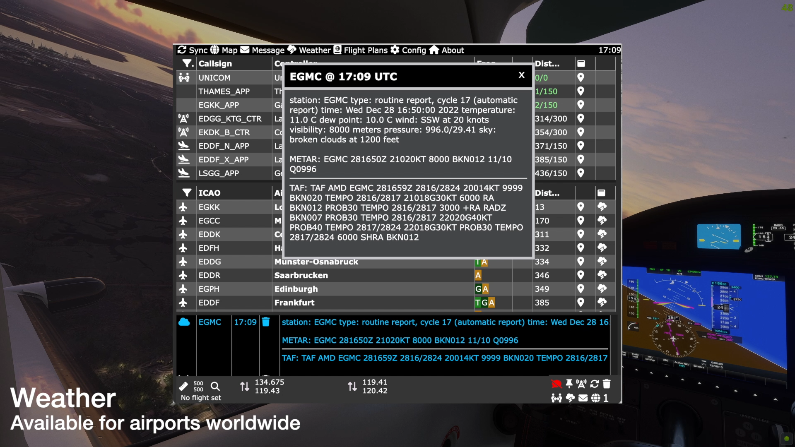
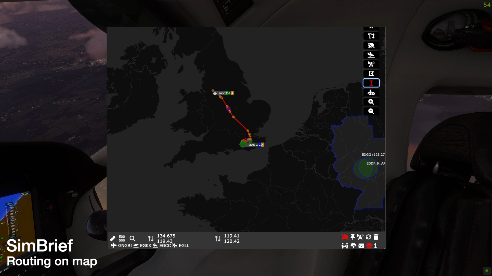

Visual Sim Radio (VSR)
MSFS 2020/2024 toolbar app for VATSIM and SayIntentions.AI
Download VSR Join our Discord Donate to VSR


Description
VSR is a toolbar app for Microsoft Flight Simulator 2020 that allows you to check which air traffic controllers are online when flying on the VATSIM Network. You can easily change to a frequency with a single click, or place a frequency on standby ready to change when requested to by ATC. The app also send & receives messages to and from the VATSIM network.
This app is not associated or endorsed by the VATSIM Network
Features
         
{kind=link}
{kind=link}
{kind=link}
{kind=link}
{kind=link}
{kind=link}
{kind=link}
{kind=link}
{kind=link}
{kind=link}
{kind=link}
Authors
- David Black (main server and app)
- Craig Farrell (vPilot plug-in)
Links
Acknowledgments
- Craig Farrell for developing the vPilot plug-in
- The Leaflet map libraries
- The Tabulator framework
- The VAT-Spy data project
- Maximus and others for helping simplify the MSFS toolbar app environment
- Ross Carlson's vPilot project
- Last but not least, the amazing group of people who joined and Beta programme and tested this thing until it was good to go !
Buy me a Coffee or donate via Paypal
Here's a link for those wishing to use PayPal
Thanks